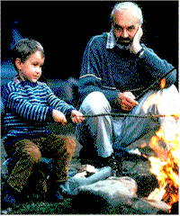

Contents | Features | Reviews | News | Archives | Store |
 |
|
| Movie Credits | Buy It! |
Kolya
Review by Eddie Cockrell
|  | Directed by Jan Sverak Starring Zdenek Sverak, Andrej Chalimon,
Screenplay by Zdenek Sverak, |
Precisely a decade ago, Czech director Jiri Menzel's whimsical rural comedy My Sweet Little Village (Vesnicko ma strediskova) delighted art-house audiences in the United States and proudly represented Czechoslovakia in the Best Foreign Language Film category of the Academy Awards, losing to Fons Rademaker's Dutch drama The Assault. The ensuing years saw much change in that part of the world: the Velvet Revolution freed Czechs and Slovaks from Socialist rule, the country split apart in a purely political move that most citizens to this day barely understand and strongly disagree with, and the film industry, once an imaginative and mischievous contributor to world cinema, fell silent -- the victim, as in many other nations, of economic upheaval and the invasion of Hollywood.
As evidenced by the charming and affecting new Czech film Kolya, in which a fiftyish bachelor must deal with a five-year-old Russian boy and his own stale lifestyle on the eve of the Velvet Revolution, the intervening ten years have seen one constant: Zdenek Sverak. The writer and star of the film, an immensely popular presence on the Czech cultural scene for nearly 30 years, is also the author of My Sweet Little Village and the father of this new film's director, Jan Sverak (he's also an actor, seen in the United States in Menzel's previously banned 1969 satire Larks on a String). Together, they signal a new beginning for Czech cinema and represent a new breed of hyphenate filmmaker that can work hand-in-hand with international co-producers and aggressive distributors to present films about the foibles of individual countries to audiences around the world.
Frantisek Louka (Sverak pere) is a confirmed bachelor in his mid-fifties who lives in a top-floor garret flat near the Hradcany Castle in Old Town Prague. Fired from the symphony orchestra (apparently for political reasons, although he seems to possess a grumpy mischievousness that could easily be misinterpreted as subversive), he spends his days in a desultory quartet playing the cello for funerals at the city crematorium and his nights entertaining other men's wives -- when he can coax them away from their husbands. His most recent conquest is Klara (Libuse Safrankova), who sings with the quartet at the funerals. Franta seems to be always short of cash, and thus takes in odd jobs such as replacing the gold trim on tombstones when he's not racing from cremation to cremation.
His gravedigger friend Mr. Broz (Ondrez Vetchy), whom he owes a great deal of money, comes to him one day with a business proposal: a marriage of convenience to a distant Russian niece who needs papers. Louka resists at first (like most Czechs, he views Russians with discrete contempt) but relents when Nadezda (Irena Livanova) turns out to be beautiful. As soon as they're married she promptly emigrates to West Germany and her lover, leaving the responsibility for sheltering her five-year-old son Kolya -- a little Russian, but a Russian nonetheless -- to Franta. Not only must Louka make room for Kolya in his flat and his life, but he must manage an existence that, in 1988 Prague, includes such annoying minutiae as taping Russian flags to his windows for holiday celebrations and being hauled in for the occasional inept but nonetheless sinister interrogation. Each will change the other's life in subtle but tangible ways, climaxing in the Velvet Revolution of late 1989 (mixing documentary footage and a staged concert in the Old Town Square) and their inevitable parting. Along the way, their life together unfolds with humor, pathos enough sly and dark humor to mark this as a Czech film in the rich tradition of vintage Milos Forman (the Oscar-nominated Loves of a Blonde, Fireman's Ball) and, yes, My Sweet Little Village.
Kolya is full of graceful, provocative imagery and metaphor, beginning with the musical motif of Dvorak's theme for the 23rd Psalm ("The Lord is My Shepherd, I Shall Not Want..."). It both opens the film and serves as a sublime coda, as the boy recites the psalm -- in Czech! -- as he flies to Moscow at the end. An eagle is glimpsed briefly as Franta drives from the city to the country, mirroring the reverence and eagerness with which many Czechs view trips to the country. Perhaps the most fully fleshed-out visual analogy of the film is the bauble that Louka finds as he cleans out the gutters at his mother's house. Nobody seems to know whether it has value (he rejects a low offer from a jeweler), and speculation varies wildly on how it could have ended up on a roof. Young Kolya, too, is a treasure of indeterminate value, and there is puzzlement over how he got where he is and what to do with him.
Jan Sverak draws a remarkable performance out of the young Andrej Chalimon as Kolya that is the heart and soul of the film. Discovered in a Moscow kindergarten after five visits and a desperate plea to the Russian casting company to look for "the biggest troublemakers" ("often the troublemakers have the biggest personalities," Jan Sverak told the New York Times), young Chalimon takes to his new profession well and is the emotional barometer by which the callous Franta can be gauged -- and redeemed. "I think that we need films about feeling and compassion," Zdenek Sverak says in the film's American presskit. "I liked the idea of a man who is under all sorts of pressure and yet he listens to his heart. I should say that we need films on this subject more than any other."
The attention to detail on the set bears mention as well. The Sveraks have remarked on the challenge of "dressing down" Prague to insure that there were no advertisements on walls or trams, and Zdenek Sverak tells the story of how Jan noticed that his shoes were too clean for a Socialist era bachelor. The Trabant Louka buys is of appropriate vintage, and even the Czech money dates from before the revolution. Who would have thought only a decade ago that such effort would be involved to insure that the official Czechoslovak crest on government buildings featured the Soviet star above the lion instead of the now-restored crown?
As is usual with foreign films, many language-based in-jokes are lost on the monolingual viewer. One of Kolya's early words in Czech is "chemodan," which means suitcase, and the wordplay between the boy and the man with the word "krasny" springs from its dual meaning: "red" in Russian and "beautiful" in Czech. The fun even extends to proper names, as the distracted social worker that Franta has forgotten he summoned -- and no longer wants -- is named "Zubata," Czech slang for the grim reaper.
Born in 1965 and a filmmaker since his father gave him a Super-8 camera as a boy, director Jan Sverak has made four features and numerous shorts. His 1989 student film Oil Gobblers (Ropaci) won an Academy Award for Best Foreign Student Film, and his debut feature Elementary School (Obecna Skola) -- also written by his father -- was the last film to represent the united Czechoslovakia, in the Foreign Language Film category of the 1991 Oscars (it lost to Italy's entry Mediterraneo). His second feature, 1994's Accumulator 1 (Akumulator 1) -- which co-stars his father -- is an imaginative, tongue-in-cheek science fiction comedy that remains the most expensive Czech film ever made, while his 1995 follow-up The Ride (Jizda) takes a 180-degree turn in its laid-back road movie tale of three disaffected youths and their summer sojourn across the Czech Republic by car (tellingly, on this project, Zdenek Sverak is nowhere to be found). Kolya is the first film written by Sverak pere specifically for Sverak fils.
Markedly different one from the other in style, tone and budget, Jan Sverak's ouevre to date seems a conscious effort by a filmmaker of great flexibility and ambition to work in as many voices as possible. Could Sverak the Younger go Hollywood? He's got the skill and the tools and perhaps the desire and after Kolya probably the opportunity. Yet he's insisted in interviews that he has no interest in compromising his vision to make films. What remains to be seen is the degree to which he wants to give up his hard-learned lessons and temper his natural talent in the service of an industry in which individuality is rarely rewarded but the individual is. Francois Truffaut, himself a director blessed by a delicate rapport with children, made one English language film (Fahrenheit 451) and vowed to never make another one. The success of Kolya will tell the tale.
Significantly, the shrewd release pattern of Kolya in the United States positions it to be the most talked-about foreign language film in wide distribution as the Academy Award nominees are announced (11 February). That it has already won the Golden Globe award in that category virtually insures that it will make the Oscar cut. Should Kolya win, it would become the first film from the former Czechoslovakia to receive the award since Closely Watched Trains precisely 30 years ago. That's a long enough draught for a national cinema of such power and importance, as well as a significant tribute to Zdenek Sverak's distinguished body of work to date and the impressive potential of Jan Sverak on the world stage. Kolya is domestically produced film of international importance, a lovingly made and universally understandable tribute to the resiliency of children to adversity, the essential decency in even the stodgiest of adults and, in the words of Zdenek Sverak, "some good in every misfortune, and the other way round."
Contents | Features | Reviews | News | Archives | Store
Copyright © 1999 by Nitrate Productions, Inc. All Rights Reserved.